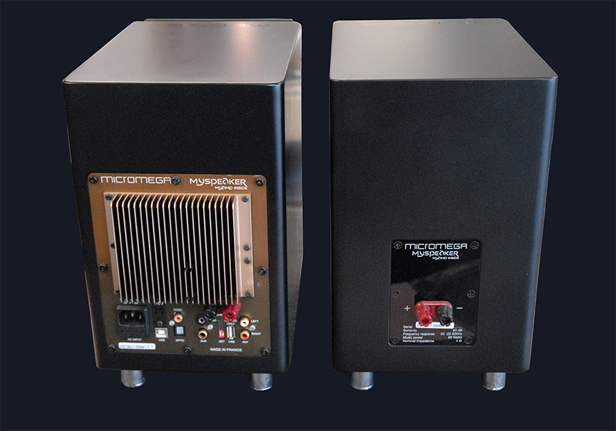
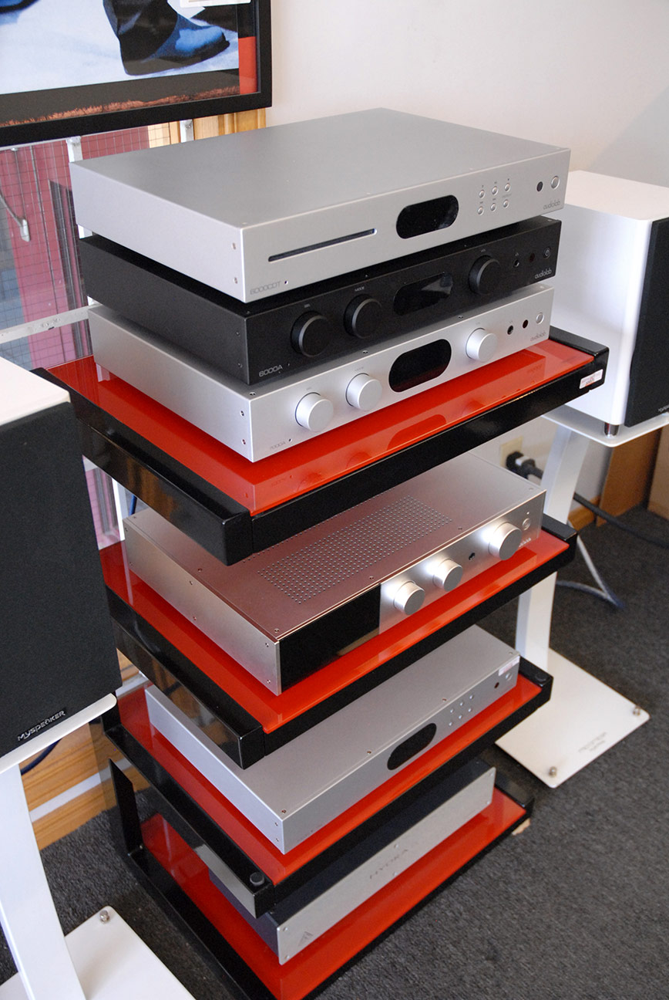

High performance without the bulk. Well suited to intimate
listening spaces.
graphic_eq
Precise Imaging
Pinpoint accuracy in soundstage reproduction for a holographic
experience.
shelves
Stand or Shelf
Versatile placement options designed to integrate into any room
architecture.
architecture
Room-Matched
Expert advice on sizing and placement for your specific acoustic
environment.
Front and back perspectives of Micromega engineering.
Engineering Excellence
Every curve and component is carefully selected for
high-fidelity audio reproduction. From the precision-tuned
cabinets to the hand-selected internal components, these
speakers are designed for demanding, critical listening
environments.
check_circleHand-assembled in France with premium finishes
check_circleIntegrated amplification options for streamlined
setups
check_circleGold-plated terminals for maximum signal integrity
Our Selection
Hand-picked standmount loudspeakers, available to audition in our
Ottawa showroom.
Our bookshelf and standmount selection rotates with the lines we
carry, chosen for their imaging, tonal balance, and
room-friendly footprint. Pair them with matched stands and the
right amplification for well-matched results.
Tell us about your room and the music you love, and we will
recommend the speakers worth hearing in person.
A bookshelf — or standmount — speaker is a compact two-way design
built for imaging and tonal accuracy rather than sheer scale. It is
the right choice for a small or medium room, a near-field setup, or
any space where a full-range tower would overload the boundaries. On
proper stands, a good standmount disappears into the room and throws
a soundstage that punches well above its size.
Key Takeaways
Standmounts excel in small-to-medium rooms, trading outright bass
for precise imaging.
Dedicated stands are essential, not optional — they set tweeter
height and tighten bass far more than a shelf or sideboard.
Sealed cabinets place easier near a wall; ported cabinets reach
lower but want breathing room.
Add a subwoofer only for the lowest octaves, larger rooms, or
home theatre.
Our standmount selection rotates with the lines we carry — chosen for
imaging, tonal balance, and a room-friendly footprint. The
Micromega bookshelf speakers, built in France, are a current example. This guide covers the three
decisions that most change how a standmount sounds: stands, cabinet
type, and placement.
Why Do Bookshelf Speakers Need Stands?

For clean, accurate sound, yes — and it is not a minor upgrade. Dedicated
stands decouple the speaker from furniture, place the tweeter near ear
level, and keep the cabinet rigid and stable. A mass-loadable stand of
the correct height tightens bass and sharpens imaging far more than
setting the speakers on a shelf or sideboard, where the surface
resonates and the tweeter ends up too low. Plan for stands in the
budget from the start, and see our matched
speaker stands.
Ported or Sealed: Which Cabinet Suits Your Room?
Standmounts come in two cabinet types, and the right one depends on
how close to a wall they will sit.
Cabinet
Character
Placement
Ported (bass-reflex)
More bass output and efficiency
More sensitive to nearby walls
Sealed (acoustic-suspension)
Tighter, more controlled bass
Easier close to a wall
Sealed designs trade some low-end extension for placement
flexibility; ported designs reach lower but want breathing room. If
your speakers must live near a boundary, a sealed cabinet is usually
the safer bet.
Where Do Bookshelf Speakers Fit Best?

Standmounts excel in small to medium rooms where their precise
imaging shines. Keep them out of corners and pull them a foot or two
off the wall to control bass and boundary reflections. A toed-in,
equilateral-triangle setup between the two speakers and your seat
gives a tightly focused soundstage. For most music in a well-sized
room, a quality standmount delivers satisfying midbass on its own; add
a
subwoofer
only if you want the lowest octaves or run home theatre.
Tell us about your room and the music you love, and we will recommend
the standmounts worth hearing in person.
Book a listening demo
to compare them on matched stands and amplification.
Frequently Asked Questions
Expert guidance on choosing the right bookshelf speakers for
your system and room.
Do bookshelf speakers need stands?expand_more
For clean, accurate sound, yes. Dedicated stands decouple the
speaker from furniture, position the tweeter near ear level,
and keep the cabinet rigid and stable. Mass-loadable stands
of the correct height tighten bass and sharpen imaging far
more than placing the speakers directly on a shelf or
sideboard.
What room size and placement suit them best?expand_more
Bookshelf speakers excel in small to medium rooms where
their precise imaging shines. Keep them away from corners
and pull them out from the wall a foot or two to control
bass and boundary reflections. A toed-in,
equilateral-triangle setup between the two speakers and your
listening seat typically yields a tightly focused soundstage.
Do I need a subwoofer with bookshelf speakers?expand_more
Not always. Many quality standmounts deliver satisfying
midbass for most music in a well-sized room. If you favour
organ, electronica, or home theatre, or have a larger space,
a well-integrated subwoofer extends the lowest octaves and
relieves the main speakers, improving overall clarity and
dynamics.
What is the difference between ported and sealed
designs?expand_more
Ported (bass-reflex) cabinets use a tuned vent to extend
bass output and efficiency, but they are more sensitive to
nearby walls. Sealed (acoustic-suspension) cabinets
typically offer tighter, more controlled bass and easier
placement close to a wall, at the cost of some low-end
extension. The right choice depends on your room and how
near a boundary the speakers will sit.